1 · The problem
Today's dampers waste energy, ride worse when full, and see nothing.
Every coach and wagon on Indian Railways carries secondary dampers that turn vibration into heat and are tuned for one load. The same fleet loses trains to track defects, hot axles and train parting. Its goods wagons have no electricity to run any sensor.
Track defects cause the most derailments
171 derailments from poor track maintenance in 2017–21. Track-recording runs fell 30–100% short of schedule.
Hot axles are caught only at fixed sites
About 3 cases a day. Bearings are checked at only about 25 trackside sites.
Train parting is seen only at the last wagon
643 partings and 2,059 wagon detachments in 2018–19.
Crowded coaches ride worse
Fixed dampers lose 17–30% of their damping as passengers board.
Damper energy is thrown away
20–90 W per coach bogie, and about 210 W per loaded wagon bogie, all turned into heat.
Goods wagons have no electricity
No power means no continuous monitoring on the wagons that carry the most risk.
2 · The idea
One smart part, five jobs.
SwarmRide replaces the passive damper with an electromagnetic smart damper, in the same mounting points. A magnet moving through a coil makes electricity, and the current drawn from the coil sets how firm the damper is. So the same device harvests energy, controls the ride and powers the bogie's own sensors.
Makes its own power
Suspension motion moves magnets through a coil and charges a power bank on the bogie.
Ride tuned to the live load
Power electronics set the coil current, and the current sets the damping, matched to the measured load (LPV).
Warned before the bump
The locomotive meets every bump first. Coach n gets the warning after tₙ = dₙ / v and prepares for it.
Self-powered safety sensors
The bank powers bearing, wheel, coupler and track sensors on every bogie, with no new wiring.
Falls back to today's damper
On any fault a relay puts a resistor across the coil, and the damper behaves exactly like today's.
Two products, one technology
SwarmRide Freight: every axle watched and every wagon self-powered, with partings found at the exact wagon. SwarmRide Passenger: a ride tuned to the load and to the bump ahead, with no new wiring.
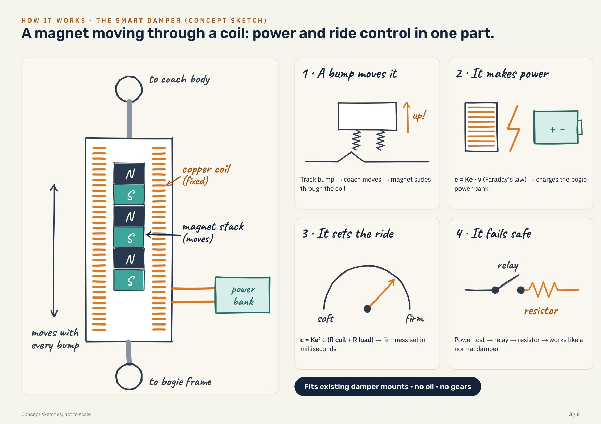
3 · How the smart damper works
A magnet moving through a coil.
- A bump moves it.The track lifts the bogie, the coach moves and the magnet slides through the copper coil.
- It makes power.The coil's voltage is proportional to the speed (Faraday's law). Power electronics charge a supercapacitor and a small battery on the bogie.
- It sets the ride.The current drawn from the coil pushes back on the magnet. More current means a firmer damper, set in milliseconds by software.
- It can push.At a known bad spot the same electronics briefly drive the coil as a motor, using banked energy.
- It fails safe.If anything goes wrong, a contactor connects resistors that give exactly today's damping. Safety rests on hardware, not software.
4 · Train Brain
The locomotive warns every coach before the bump arrives.
The lead bogie feels every bump first. Coaches behind it reach the same spot a little later, at time t = distance ÷ speed. The Train Brain sends each coach its warning so the damper is ready. It also builds a track map that lists the known bad spots.
Try it: how much warning does a coach get?
Coach length 23.5 m (LHB), measured to the coach's front bogie. The controller needs 0.01 s per step, and the timing tolerates ±20 ms of error.
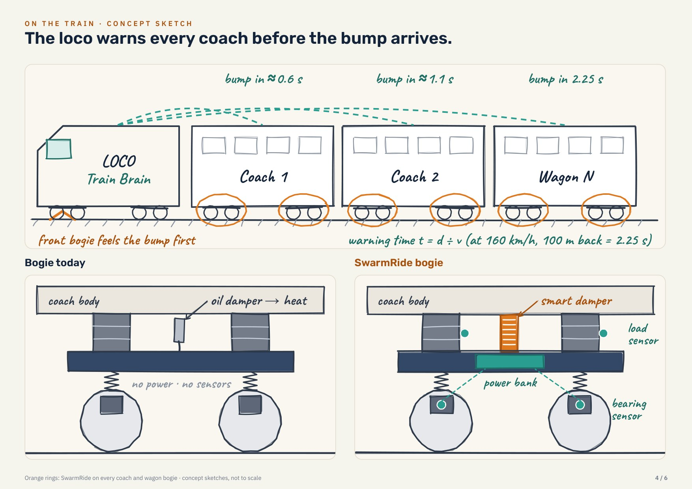
5 · On a real bogie
No new bogie, no new cables. One part swapped.
SwarmRide fits the bogies Indian Railways already runs: the LHB and Vande Bharat air-spring bogies, the ICF coach bogie and the Casnub wagon bogie.
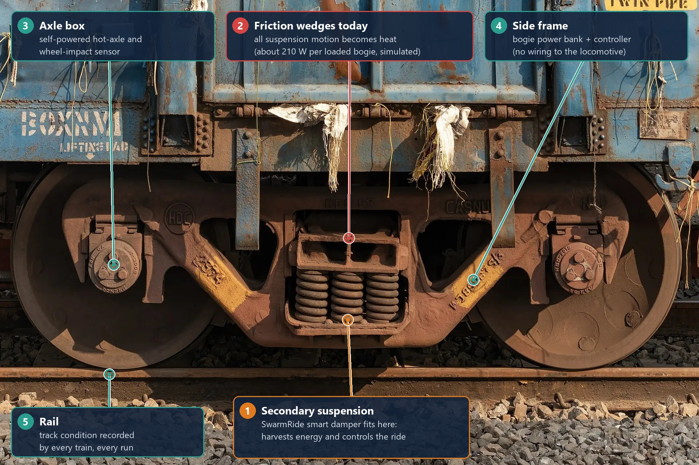
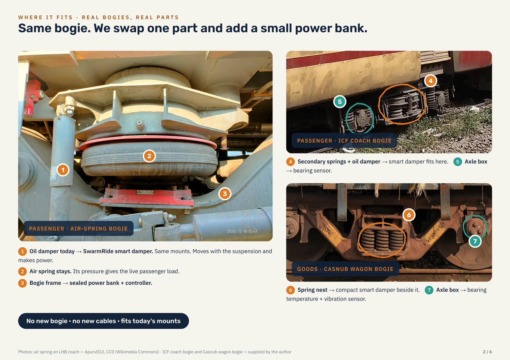
| Vehicle | What SwarmRide replaces | Load signal for the control |
|---|---|---|
| LHB / Vande Bharat coach | The vertical secondary dampers beside the air springs | Air-spring pressure (already on board) |
| ICF coach | The secondary dampers on the bolster springs | Spring deflection sensor |
| BOXN wagon (Casnub) | Works beside the friction wedges, or replaces them with a geared smart damper | Spring-nest deflection sensor |
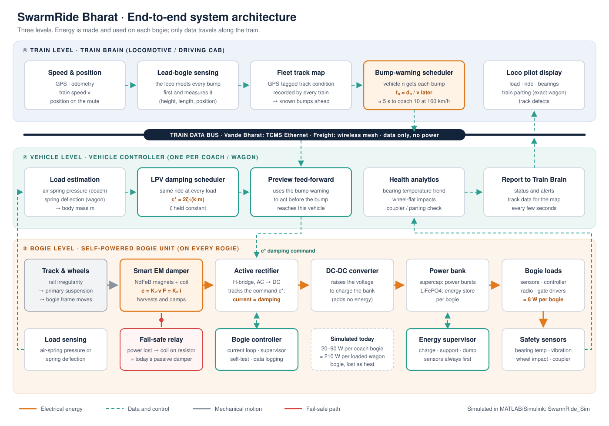
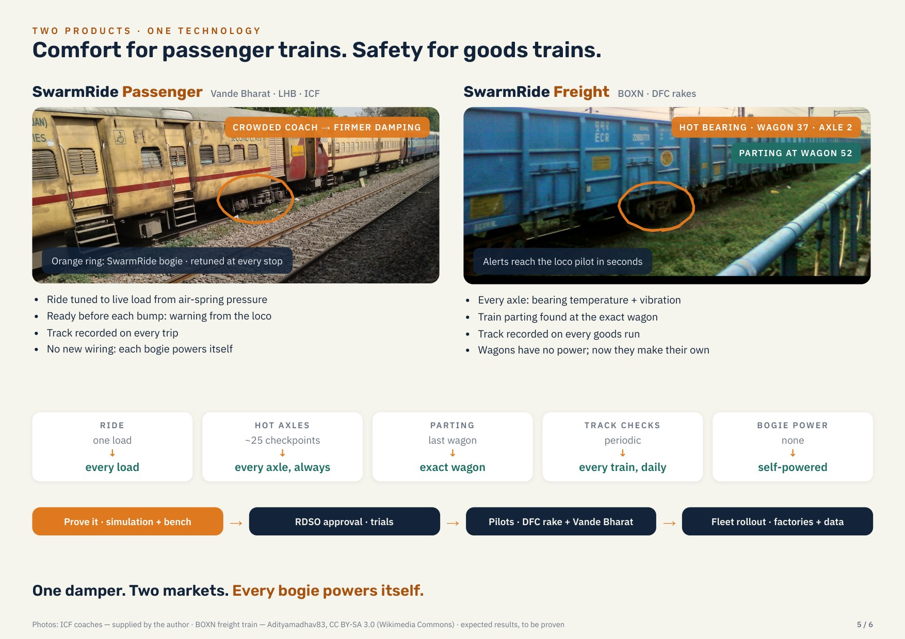
6 · The proof, in MATLAB / Simulink
Same coach, same rail, only the damper changes.
The system was built and tested in five stages before any hardware. Every comparison keeps the coach, rail, speed and load the same, so every result is fair. An automatic test suite checks the model against hand calculations, an independent model, energy conservation and step-size convergence: 85 of 85 checks pass.
Today's trains, measured first
A half-coach model (body bounce and pitch, two bogie frames) of LHB, Vande Bharat, ICF and BOXN with today's dampers, on a standard rough-track spectrum.
- The Simulink model matches an independent model within 0.003%, and the bounce frequency matches a hand calculation (0.83 Hz).
- Fixed dampers weaken as people board: LHB damping ratio 0.14 → 0.10 from empty to 12 t, and the ride index worsens 1.73 → 1.84.
- Heat thrown away per bogie: 64–73 W (LHB), 82–87 W (Vande Bharat), up to 214 W on a loaded BOXN.
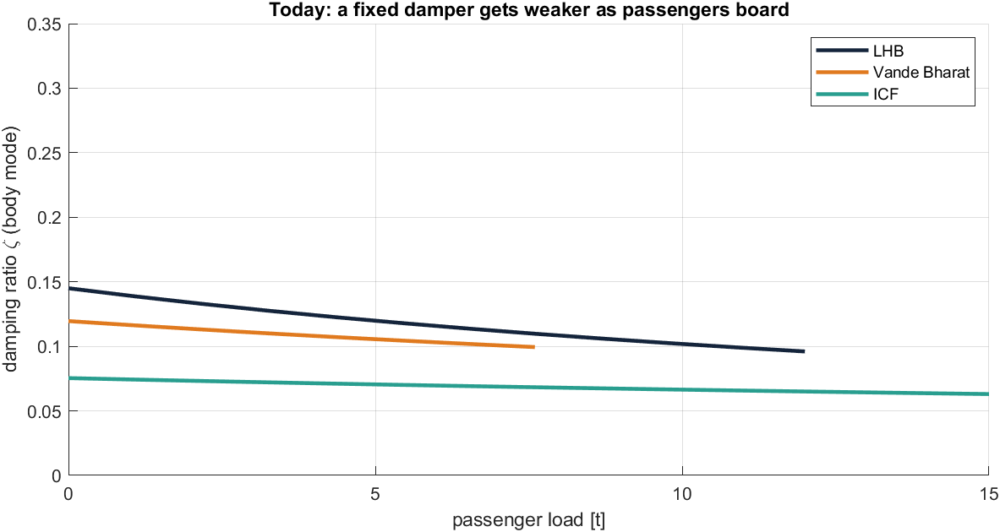
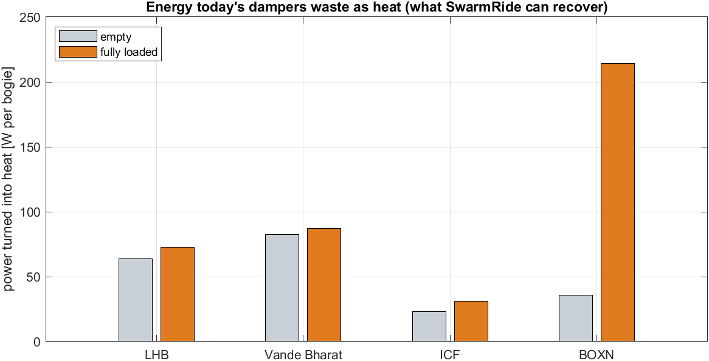
The smart damper and its power chain
Today's damper is replaced by the electromagnetic damper, an active rectifier, a DC-DC converter and a supercapacitor + LiFePO4 bank on every bogie. Three designs: A direct-drive, B hybrid, C geared rotary.
- Same ride as today when set to copy today's damper (Wz 1.846 vs 1.844), with power on top.
- Into the bank on rough track at top speed: LHB 46–51 W, Vande Bharat 55–62 W, ICF 21–23 W, BOXN 78–90 W. The electronics need 8 W.
- Energy balance within 0.001%. The fail-safe gives exactly today's damping after a fault.
- Design C (geared rotary) leads. Chasing maximum power transfer is the wrong goal, because it burns half the power in the coil.
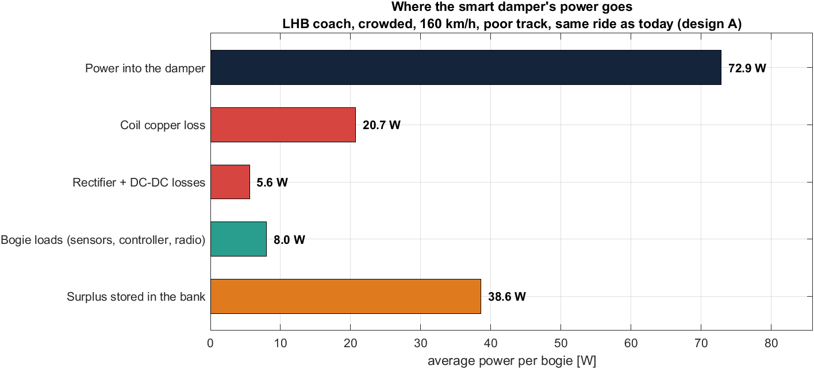
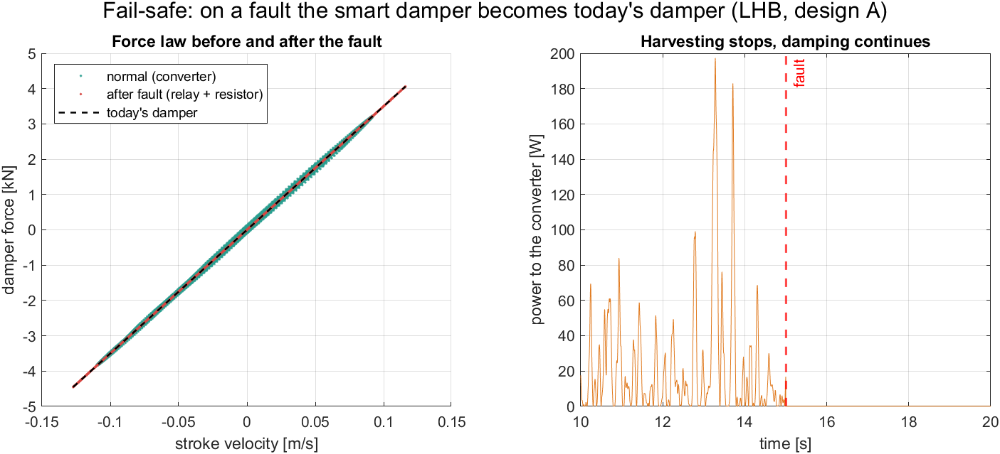
Load-adaptive control with the Train Brain preview
An LPV (load-scheduled) LQR controller at 100 Hz, plus the rail ahead from the Train Brain. Tested head to head against today's damper and a fixed-setting harvester at empty, half and full load.
- Crowded LHB ride index 1.84 → 1.53 (−17%). Vande Bharat −16%, loaded wagon −23%.
- Body vibration about 40% lower; suspension travel down by a third.
- Still 33–38 W per bogie into the bank. No fixed setting reaches this comfort.
- Robust to a ±20 ms late warning and a ±10% load error. The preview alone adds only 1–2%; Stage 4 fixes that.

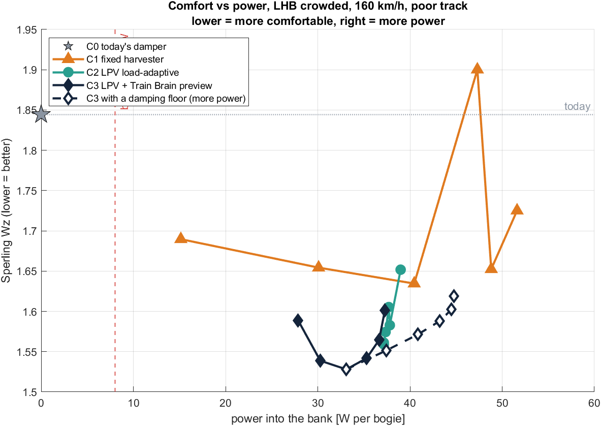
Push at bad spots, a whole day, and safety sensing
- Active push at a known track settlement: the worst-seat jolt falls 0.97 → 0.20 m/s² (−80%) for 345 J (0.1 Wh). At a short dip: −67% for 20 J.
- A full day with a 10 h night parked: with a 1 W sleep when parked, LHB ends at 60% (it started at 60%), Vande Bharat at 69% and a freight wagon at 80%. No load is ever left unpowered.
- Hot axle: the on-bogie sensor alarms within 10 s. With checkpoints every 250 km, 82% of faults pass 180 °C before any check.
- Damaged wheel: visible in the damper's own coil signal at ×5 to ×204 the healthy level, and located to the wheelset.

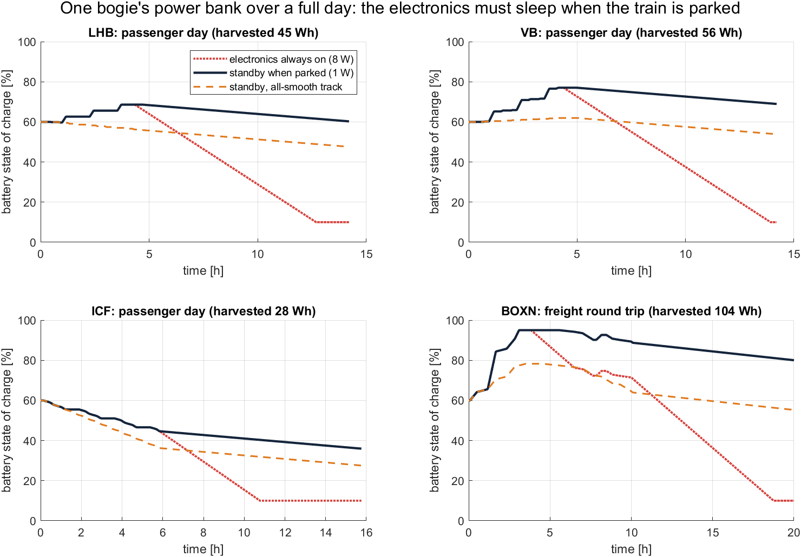
One real damper on a test rig
The design-C damper is sized for real hardware from what it sees on the coach. A bench model adds everything the coach model idealised: a 10 kHz current loop, voltage limits, losses, a contactor that takes 20 ms, and winding heat.
- On the damper's own motion replayed from the coach: 14.4 W into the bank (coach model 14.5 W).
- Fail-safe gives today's damping after a fault, with a 20 ms gap while the contactor moves.
- Push: 800 W peak for 95 J. The winding settles at 42 °C.
- Controller firmware in C matches MATLAB in 10 of 10 checks, in PC and microcontroller arithmetic.
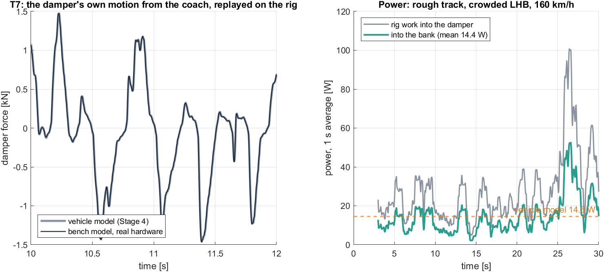
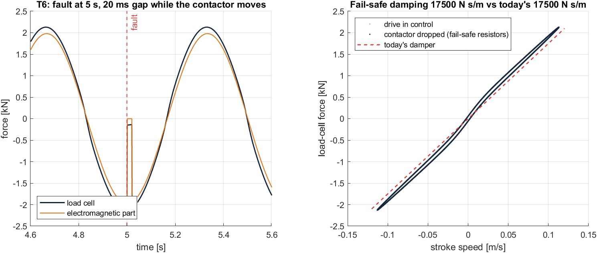
Click any figure to enlarge it. For interactive charts of every result, open the live dashboard.
7 · Bench prototype (Gate B)
Ready to build: one damper, one rig, ten tests.
The simulation showed that the system rides better, makes its own power and catches faults. The bench prototype checks those assumptions in metal. Everything needed to build and test it is ready.
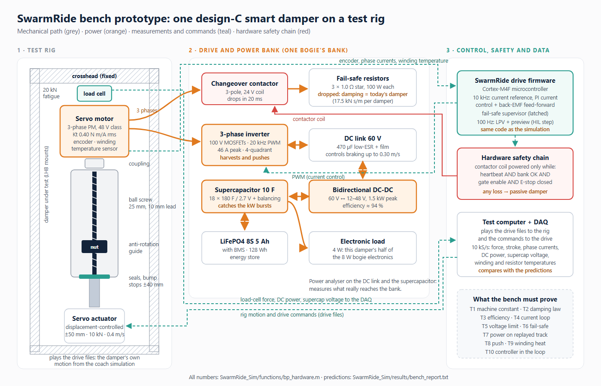
| The prototype (one LHB damper, design C) | |
|---|---|
| Motor | 48 V-class servo, Kt 0.40 N m/A rms, 14 N m peak |
| Ball screw | Ø25 mm, 10 mm lead, ±40 mm stroke |
| Force | 8 kN peak (simulated peak 6.1 kN) |
| Drive | 60 V, 46 A, four-quadrant, 10 kHz current loop |
| Fail-safe | Contactor + 3 × 1.0 Ω = today's damping |
| Power bank | 10 F supercapacitor + 128 Wh LiFePO4 |
| Budget, plan | ≈ ₹4.4–13.5 lakh (indicative), 16 weeks to Gate B |
| Test | What the lab must measure |
|---|---|
| T1 | Machine constant 175.4 V s/m |
| T2–T3 | Damping = command (within 0.1%); efficiency 0.92 → 0.60 |
| T4–T5 | Current loop 0.5 ms; controlled up to 0.36 m/s (the coach needs 0.16) |
| T6 | Fail-safe 17,500 N s/m, 20 ms gap |
| T7 | 14.4 W into the bank on replayed rough track |
| T8–T9 | Push 800 W for 95 J; winding 42 °C |
| T10 | Firmware rides a virtual coach (hardware in the loop) |
The real duty is light
At most 6.1 kN, 0.16 m/s and about 8 W of coil loss. A 1–1.5 kW-class 48 V servo is enough.
Inertia is not the problem it looked like
The ride gets slightly better up to 16× the assumed rotor inertia. Friction is the budget to watch: 600 N would cost a fifth of the harvest.
The fail-safe has a 20 ms gap
While the contactor moves there is no electromagnetic force. It is a small dip that the bench must confirm; a faster solid-state bypass is an option.
8 · Why it is better than what is used today
It fills the gaps between today's systems.
SwarmRide does not replace Indian Railways' safety systems. It works alongside them, all the time and on every vehicle.
| In service today | Its limit | What SwarmRide adds |
|---|---|---|
| Fixed oil dampers, friction wedges | Tuned for one load; all energy becomes heat | Ride tuned to the live load; energy reused on the bogie |
| OMRS trackside bearing checks | Sees a wagon only when it passes about 25 sites | Every axle, all the time |
| End-of-train telemetry (EoTT) | Watches the last wagon only | Every wagon reports; a parting is located at the exact wagon |
| Track Recording Cars | Periodic, and behind schedule | Every train records the track on every run |
| Kavach | Collision prevention through signalling | A different job: vehicle and track health, working alongside it |
| Energy-harvesting dampers (research) | Power at the cost of ride comfort | Comfort and power together, with preview and fail-safe |
9 · Roadmap
Prove it, get approval, pilot, then scale.
Freight comes first, because wagons have no power and the safety need is greatest. Vande Bharat follows for comfort. Timing depends on funding and RDSO trials.
Concept
Problem evidence, architecture, pitch, technical design
Simulation 1–2
Today's trains; smart damper and power chain
Simulation 3–4
Controllers; push, full day, health sensing (Gate A)
Bench design
Hardware ratings, bench model, firmware, test plan
Bench prototype
Build one damper and test it on a rig (Gate B)
Field run
One instrumented LHB bogie, with RDSO (Gate C)
Pilot and scale
Freight rakes, then Vande Bharat trainsets
10 · Where we are
Is the project complete?
The simulation and design phase is complete. The product is not finished yet: the next proof must come from real hardware, then a real train.
Done
- Full MATLAB/Simulink system: Stages 1–5, 85 of 85 checks
- Gate A met in simulation: better ride at every load, self-powered over a full day
- Bench prototype designed: ratings, bench model, C firmware, rig files, test plan, budget
- Investor pitch (PDF and Word), whitepaper, technical document, dashboard
Next
- File a provisional patent before any public pitch or demo
- Get supplier quotes and order the motor, screw and electronics
- Build and test one damper: T1–T10 (Gate B)
- Firmware: state observer, CAN link to the Train Brain
Later
- Real vehicle data from RDSO to replace estimated parameters
- Side-to-side (lateral) model
- Instrumented field run on one bogie (Gate C)
- RDSO approval, pilot, scale
11 · Documents